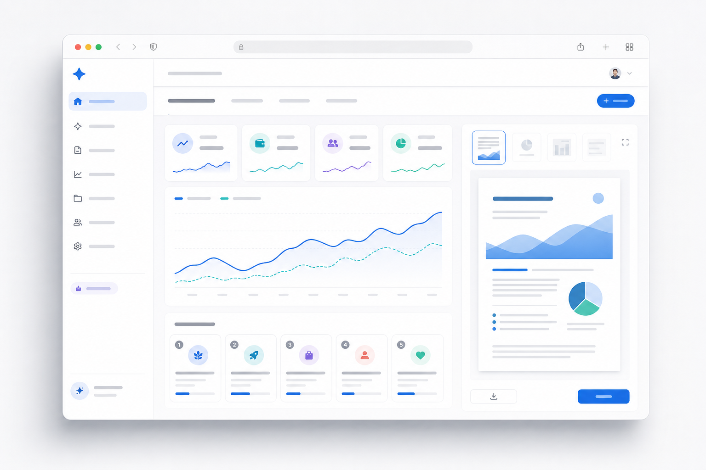

谷歌热词全自动 AI BP 生成网站 是一款以实时谷歌趋势为输入、用 AI 完成 “机会发现 → 多维评分 → ROI 排序 → 商业计划自动生成（HTML/PDF 导出）” 的一站式 SaaS。 它在团队已上线的趋势产品 Trend Now（趋势采集与展示 MVP）之上演进，把“先有点子才写 BP”的传统工具， 升级为“先帮你发现并排序值得做的机会，再自动写出可执行的 BP”。
本文件本身就是产品的“样品”：我们用同一套方法，从谷歌热词出发，头脑风暴出 10 个可线上化的商业机会， 以六维评分矩阵排序投入产出比，遴选出得分最高、全线上化的机会——即本产品自身。差异化护城河在于把 “机会发现”前置到“BP 撰写”之前，并天然复用 Trend Now 的实时趋势数据（详见第 6、10 节）。
种子轮：融资 ¥800 万、投后估值 ¥4,000 万、出让 20%；经 A/B 轮稀释后退出时净持股约 13.6%。 下表“账面”为命中基准计划时的逐年市值标记（纸面，非现金）；“风险调整”以国内同阶段同类的现金退出成功率加权（详见第 14 节）。
| 口径 | 第1年 | 第2年 | 第3年 | 第4年 | 第5年 | 年化 |
|---|---|---|---|---|---|---|
| 账面 ROI（命中基准计划，纸面） | +50% | +140% | +380% | +495% | +665% | ≈50% |
| 账面 MOIC（倍数） | 1.5× | 2.4× | 4.8× | 5.95× | 7.65× | — |
| 风险调整·若于该年现金退出（期望） | −51% | −26% | +42% | +74% | +121% | — |
Trend Now 已部署于 Netlify（Astro + React + Neon），趋势采集/检索/多语言/SEO 均跑通，为本产品提供现成数据与流量入口。
生成式 AI 2026 年市场约 US$28–55B，CAGR ~30–37%[3]；BP/规划软件约 US$2.6B[7]，AI 重塑该品类。
“热词→机会→排序→BP”的专有数据闭环与工作流，随使用量增强，竞品难以快速复制。
本轮拟融资 ¥800 万，用于产品研发（40%）、数据与算力（18%）、市场与增长（22%）、团队与运营（15%）、合规与储备（5%）， 支撑约 18 个月跑到产品市场契合（PMF）与早期规模化收入，并为 A 轮做好指标准备（详见第 17 节）。
让“发现一个值得做的生意”这件事，像今天搜索一个词一样简单、可靠、人人可及。
把全球实时需求信号（谷歌趋势）转化为结构化、可执行、可融资的商业机会，降低创业的认知门槛与试错成本。
用 AI 把“趋势 → 机会 → 计划 → 行动”的链路自动化，为创业者和中小企业创造真实价值。
为用户与社会做实事：讲实话、办实事、求实效——只交付经得起检验的机会与计划，而非堆砌辞藻。
| 用户 | 核心痛点 | 我们的价值 | 愿付费点 |
|---|---|---|---|
| 独立创业者 / 副业者 | 不知做什么、缺乏验证 | 机会清单 + ROI 排序 + 可执行 BP | 订阅 / 单份 |
| 中小企业 / 工作室 | 新业务立项与融资材料 | 市场测算 + 财务模型 + 投资人级 PDF | 团队订阅 |
| 孵化器 / 投资机构 / 高校 | 批量筛选与尽调初稿 | 趋势看板 + 批量 BP + API | 企业版 / API |
以上不是口号：它们直接体现在产品（数据有据、机会可验证）、财务（公允勾稽）、与回报披露（以现金退出为准）的每一处。
三股力量在同一时间窗口叠加：生成式 AI 能力跃迁、实时趋势数据普惠、创客经济 / 中小企业数字化。它们共同把“自动化的商业机会发现与计划生成”从设想变为可交付的产品。
多家机构对生成式 AI 2026 年市场规模的测算区间为 US$28.45B（Mordor）至 US$47–55B（Research and Markets / Precedence）， 长期 CAGR 约 28.7%–37%[3]；更广义的 AI 市场 2026 年约 US$539B、到 2033 年达 US$3.5T（CAGR 30.6%）[3a]。 随着基础模型 API 价格持续下探、推理成本下降，“AI 写作 + 结构化生成”的单位成本快速降低，使按量定价的 SaaS 在毛利上日益健康。
谷歌趋势（Google Trends）等公开信号让“市场在搜什么”近实时可得。把这些弱信号结构化、去噪、归类为“可线上化的商业机会”， 是过去依赖咨询/调研才能完成的工作，如今可由数据管线 + LLM 编排自动完成——这正是 Trend Now MVP 已验证的能力底座。
全球每年约 5,000 万 家新创企业、存量逾 1.5 亿[4]；仅美国 2024 年新企业申请约 520 万、存量中小企业约 3,480 万[4]。 与此同时，商业计划/规划软件市场约 US$2.6B（2026）、并向 ~US$5B（2035）增长[7]。庞大且持续新增的“要立项、要融资、要规划”的人群，构成稳定需求底盘。
我们用产品自己的方法来选产品：从谷歌热词出发，头脑风暴 10 个可线上化的商业机会，用六维加权评分排序投入产出比，选出得分最高者。
评分 1–10 分；加权总分 = Σ(维度分 × 权重)。评分依据公开市场数据、竞品现状与团队能力自评，口径见第 19 节。
| 候选商业机会（源自热词主题） | 市场 20% | ROI 25% | 线上化 15% | 技术 15% | 速度 10% | 护城河 15% |
加权总分 | 排名 |
|---|---|---|---|---|---|---|---|---|
| ① 谷歌热词全自动 AI BP 生成网站 | 8 | 9 | 10 | 9 | 9 | 8 | 8.80 | |
| ② AI 趋势选品 / 跨境电商选品 | 8 | 8 | 9 | 8 | 8 | 7 | 7.85 | |
| ③ AI 内容 / SEO 文章生成 | 9 | 8 | 10 | 8 | 9 | 5 | 7.80 | |
| ④ AI 短视频脚本 / 分镜工具 | 8 | 7 | 9 | 7 | 8 | 6 | 7.30 | |
| ⑤ AI 简历 / 求职助手 | 7 | 7 | 10 | 8 | 9 | 5 | 7.20 | |
| ⑥ AI 设计 / Logo / 品牌生成 | 8 | 6 | 9 | 7 | 8 | 6 | 7.00 | |
| ⑦ 舆情 / 趋势监测订阅 | 7 | 7 | 9 | 8 | 7 | 6 | 7.10 | |
| ⑧ AI 客服 / 聊天机器人 | 9 | 6 | 8 | 7 | 6 | 6 | 6.95 | |
| ⑨ 在线教育 / AI 课程生成 | 8 | 6 | 8 | 7 | 6 | 6 | 6.75 | |
| ⑩ AI 法律 / 合同助手 | 7 | 6 | 8 | 6 | 5 | 7 | 6.50 |
直接复用 Trend Now 已上线的数据与流量，冷启动成本极低；用户愿付费点清晰（立项/融资刚需），单份与订阅双重变现。
从输入热词到产出 PDF 全程线上、零人工交付，边际成本仅为 token 与算力，规模化效率高。
“机会发现”前置 + 专有“热词→机会→排序”数据闭环，随使用量自增强；纯内容/选品工具同质化、壁垒低。
产品能为自己生成一份高质量 BP（即本文件），是最有说服力的能力证明与营销素材。
一条端到端的自动化流水线：趋势采集 → AI 分析 → 机会脑暴 → ROI 排序 → BP 生成 → HTML/PDF 导出。

产品界面示意（趋势看板 + 机会排序 + BP 预览/导出）
| 能力层 | Trend Now（现状·MVP） | 本产品（演进） |
|---|---|---|
| 数据 | 趋势采集、入库、检索、按时间筛选 | + 机会聚类、评分特征、行业标签 |
| 智能 | 展示与基础分析 | + LLM 编排：脑暴 / 评分 / 成稿 |
| 交付 | 网页浏览 | + BP 文档、HTML/PDF 导出、API |
| 商业化 | 流量入口（免费） | + Freemium 订阅 / 按量积分 / 企业版 |
三类典型用户，对应清晰的愿付费点；从“看趋势”到“付费成稿”的旅程被设计成自然的转化漏斗。
诉求：不知做什么、想低成本验证点子。
价值：机会清单 + 可执行 BP，降低试错。
愿付费：Pro ¥99/月 或单份 ¥39。
诉求：快速产出投资人级融资材料。
价值：市场测算 + 财务模型 + 高保真 PDF。
愿付费：Team ¥299/月（多席位协作）。
诉求：批量筛选项目、生成尽调初稿。
价值：趋势看板 + 批量 BP + API。
愿付费：企业版 / API（定制）。
每一步都有可优化的转化杠杆：SEO 内容（拉新）、引导式生成（激活）、付费墙与定价实验（转化）、协作与模板（留存）。详见第 11 节漏斗。
Freemium 拉新 → 订阅为主、按量积分为辅 → 企业版/API 提客单价。定价对标国际竞品并本地化（人民币）。
| 套餐 | 价格 | 面向 | 核心权益 |
|---|---|---|---|
| 免费 Free | ¥0 | 尝鲜 / 引流 | 趋势看板 + 每月 1 份精简 BP（含水印） |
| 专业 Pro | ¥99 / 月 | 个人创业者 | 无限机会脑暴 + 完整 BP + PDF 导出 |
| 团队 Team | ¥299 / 月 | 工作室 / 小团队 | 多席位 + 协作 + 品牌定制 |
| 按量积分 | ¥39 / 份起 | 低频用户 | 单份 BP / 按 token 计费 |
| 企业 / API | 定制 | 孵化器 / 机构 | 批量生成 + API + 私有模板 + SLA |
竞品定价对标（来源[7]）：LivePlan US$15–20/月、Upmetrics US$14/月、Venturekit US$8/月、IdeaBuddy US$5/月起、PrometAI US$55/月。本产品 Pro ¥99/月（≈US$14）落在主流区间，且提供竞品不具备的“机会发现”。
第 5 年稳态收入结构示意：订阅为基本盘，按量积分覆盖长尾低频，企业/API 提升客单价与留存。
以 Trend Now SEO + 内容 PLG 为主，自然流量占比高，混合 CAC ≈ ¥200。
付费 ARPU ~¥1,050/年、毛利 ~68%、平均生命周期 ~2.5 年，LTV ≈ ¥1,785。
LTV/CAC ≈ 5–9×，回收期 < 6 个月，符合健康 SaaS 标准。
自上而下锚定 + 自下而上验证。我们刻意保守：把 SOM 设在 SAM 的 ~1.5%，与第 13 节财务的第 5 年收入相互勾稽。
全球商业计划 / 商业规划软件市场。受 AI 重塑，品类边界向“AI 辅助创业决策”扩张；更广义生成式 AI 市场（US$28–55B[3]）为长期顺风。
可服务市场：支持中英文、面向自助式创业者 / 中小企业 / 创客的线上付费部分。以全球每年 ~5,000 万新创[4] 中愿为规划工具付费的子集估算。
3–5 年可获得份额，约 SAM 的 1.5%；与财务模型第 5 年收入 ¥7,380 万（≈US$10M）一致。
| 口径 | 数值 | 说明 / 来源 |
|---|---|---|
| 全球每年新创企业 | ~5,000 万 | 存量 >1.5 亿[4] |
| 可触达线上目标人群（保守 2%） | ~100 万 | 中英文、自助、有规划/融资需求 |
| 第 5 年付费用户（我们） | 4.9 万 | 约目标人群的 ~4.9%（见第 13 节） |
| 第 5 年收入 | ¥7,380 万 | 付费 4.9 万 × ARPU + 企业/API |
现有玩家分两类：BP 撰写工具（已有点子→格式化）与通用 LLM（能写但不结构化、无趋势数据）。我们用“机会发现 + 热词驱动 + 自动交付”切出独立站位。
| 能力 | 本产品 | LivePlan | Upmetrics | PrometAI | ChatGPT |
|---|---|---|---|---|---|
| 机会发现（不需先有点子） | ✓ 独有 | ✗ | ✗ | △ | △ |
| 实时趋势数据驱动 | ✓ | ✗ | ✗ | ✗ | ✗ |
| ROI 多维排序 | ✓ | ✗ | ✗ | △ | ✗ |
| 自动财务模型 | ✓ | ✓ | ✓ | △ | △ |
| 高保真 PDF 导出 | ✓ | ✓ | ✓ | ✓ | ✗ |
| 中文 / 本地化 | ✓ | △ | △ | △ | ✓ |
| 价格（月） | ¥99 | $15–20 | $14 | $55 | $20 |
✓ 具备且强；△ 部分/需手动拼凑；✗ 不具备。来源：竞品官网与定价[7]；ChatGPT 指通用对话模型的“裸用”能力。
“热词 → 机会 → 评分 → 成单/留存”的专有数据随使用量增强，反哺机会发现与排序精度，形成数据飞轮。
把发现、决策、成稿、交付串成一条线，替代“多个工具 + 人工拼接”，转换成本高。
Trend Now 提供现成数据与 SEO 流量入口，竞品需从零搭建趋势数据能力。
原生中文体验 + 主流价位，先吃下被国际工具忽视的中文长尾市场。
两个决定胜负的维度：横轴“机会发现能力”（要不要先有点子）与纵轴“结构化 / 自动交付”（能否一键产出投资人级文档）。右上角是空白蓝海，我们占位于此。
说明：通用 LLM 灵活但不结构化、无趋势数据；传统 BP 工具结构化强但要求“先有点子”；本产品同时具备“机会发现”与“自动交付”，且以实时热词数据为独有输入。
以 PLG（产品驱动增长） 为主轴：免费趋势看板获取自然流量，再把“看趋势的人”转化为“做计划的人”。
自然流量与数据资产是飞轮的两个支点：越用越准、越准越便宜获客。
以第 3 年为例，拆解从访客到付费的漏斗，并验证获客成本（CAC）的来源与单位经济的健康度。
| 漏斗 | 转化 | 口径 |
|---|---|---|
| 访客 → 注册 | 8% | SEO 内容 |
| 注册 → 激活 | 60% | 生成首份 BP |
| 激活 → 付费 | ~5%* | 付费墙 |
| 付费用户（Y3） | 1.2 万 | = 第 13 节 |
*注：第 13 节“付费转化 3.0%”按注册口径；此处 5% 为激活后口径（40万×3.0%≈1.2万 与 24万×5%≈1.2万 自洽）。
Trend Now 趋势页 SEO 贡献大部分访客，边际获客成本极低。
付费渠道仅作补充；整体 CAC 受自然流量稀释。
首年毛利贡献即覆盖 CAC，现金效率高。
复用 Trend Now 的 Astro + React + Neon（PostgreSQL） 技术栈，叠加 LLM 编排层、任务队列与 PDF 渲染流水线。轻量、可控成本、易扩展。
多模型路由 + 缓存 + 分级调用，按难度选模型，token 成本随行业降价持续下行。
模板约束 + 数据回填 + 规则校验 + 人审抽样，降低事实性错误。
无状态 API + 异步队列，渲染与生成解耦，水平扩容简单。
自下而上构建：用户 → 转化 → ARPU → 收入 → COGS/毛利 → Opex → EBITDA，全表相互勾稽（单位：人民币）。
| 项目 | 第1年 | 第2年 | 第3年 | 第4年 | 第5年 |
|---|---|---|---|---|---|
| 注册用户（万） | 4 | 15 | 40 | 80 | 140 |
| 付费转化率 | 2.0% | 2.5% | 3.0% | 3.3% | 3.5% |
| 付费用户（人） | 800 | 3,750 | 12,000 | 26,400 | 49,000 |
| 付费 ARPU（¥/年） | 900 | 980 | 1,050 | 1,120 | 1,200 |
| 订阅收入 | 72 | 368 | 1,260 | 2,957 | 5,880 |
| 按量/企业/API 收入 | 8 | 70 | 280 | 700 | 1,500 |
| 营业收入合计 | 80 | 437 | 1,540 | 3,657 | 7,380 |
| 毛利率 | 55% | 62% | 68% | 72% | 75% |
| 毛利 | 44 | 271 | 1,047 | 2,633 | 5,535 |
| 运营费用（研发/市场/管理） | 450 | 900 | 1,600 | 2,600 | 4,000 |
| EBITDA | −406 | −629 | −553 | +33 | +1,535 |
| EBITDA 利润率 | — | — | — | 0.9% | 20.8% |
| 混合获客成本 CAC | ¥200 |
| 客户生命周期价值 LTV | ¥1,785 |
| LTV / CAC | 5–9× |
| CAC 回收期 | < 6 月 |
| 月churn（付费） | ~3.3% |
| EBITDA 转正 | 第 4 年 |
| Y1–Y3 累计经营净流出 | ≈ ¥1,588 万 |
累计净流出 > 种子 ¥800 万，故需在第 2 年完成 A 轮（约 ¥3,000–5,000 万），与回报模型的稀释路径一致。
对第 5 年收入与估值做三情景，并赋予概率（之和为 1），用于第 14 节的风险调整回报测算。
| 情景 | 概率 | 第5年收入 | 第5年EBITDA率 | 退出估值（营收倍数） | 公司退出估值 |
|---|---|---|---|---|---|
| 保守 / 失败路径 | —※ | ≤ ¥1,500 万 | < 0 | 清算 / 贱卖 | ≈ ¥0–600 万 |
| 基准 | —※ | ¥7,380 万 | 20.8% | ~6× | ≈ ¥4.5 亿 |
| 乐观 | —※ | ¥1.2 亿 | 26% | ~7× | ≈ ¥8 亿+ |
※ 此处为经营情景（业务做成什么样）；第 14 节的现金退出情景概率（能否真正拿到钱）另行按国内同阶段同类数据加权，两者口径不同，请勿混淆。
LLM token 价格 ±30% 影响毛利率约 ±4–6pct；多模型路由+缓存可对冲。
付费转化 ±0.5pct，第 5 年收入约 ±¥1,000 万级。
CAC ¥200→¥350，LTV/CAC 仍 > 5×，单位经济稳健。
现金流与损益、融资节奏相互勾稽：种子资金支撑 ~18 个月，A 轮须在第 2 年内到位，确保现金跑道不断裂。
| 项目 | 第1年 | 第2年 | 第3年 | 第4年 | 第5年 |
|---|---|---|---|---|---|
| 期初现金 | 800 | 394 | 3,765 | 3,212 | 18,245 |
| 经营净现金流（≈EBITDA） | −406 | −629 | −553 | +33 | +1,535 |
| 融资流入 | — | +4,000 A 轮 | — | +15,000 B 轮 | — |
| 期末现金余额 | 394 | 3,765 | 3,212 | 18,245 | 19,780 |
注：种子 ¥800 万于投后到位；A 轮 ~¥4,000 万、B 轮 ~¥1.5 亿与第 13 节累计净流出（Y1–Y3 ≈ ¥1,588 万）勾稽。若 A 轮延迟，将立即切换“盈利优先 / 控费”模式（见第 18 节融资接续风险）。
本节是全篇的“回答区”：种子资金第 1–5 年的收益率（账面 + 风险调整）、以现金成功退出为基准的年化收益、胜率、盈亏比与期望收益倍数 EV。
| 项目 | 数值 | 说明 |
|---|---|---|
| 种子融资额 | ¥800 万 | 本轮 |
| 投前 / 投后估值 | ¥3,200 / 4,000 万 | 出让 20% |
| A 轮稀释 | −20% | 第 2 年，持股 20%→16% |
| B 轮稀释 | −15% | 第 4 年，持股 16%→13.6% |
| 退出时种子净持股 | 13.6% | 用于现金回报测算 |
| 年度 | 公司估值 | 种子净持股 | 种子份额市值 | MOIC | 账面 ROI |
|---|---|---|---|---|---|
| 投后(Y0) | ¥4,000 万 | 20% | ¥800 万 | 1.0× | 0% |
| 第1年 | ¥6,000 万 | 20% | ¥1,200 万 | 1.5× | +50% |
| 第2年(A轮) | ¥1.2 亿 | 16% | ¥1,920 万 | 2.4× | +140% |
| 第3年 | ¥2.4 亿 | 16% | ¥3,840 万 | 4.8× | +380% |
| 第4年(B轮) | ¥3.5 亿 | 13.6% | ¥4,760 万 | 5.95× | +495% |
| 第5年 | ¥4.5 亿 | 13.6% | ¥6,120 万 | 7.65× | +665% |
账面年化（5 年）≈ 50%（7.651/5−1）。这是纸面估值，不等于现金——真正能否拿到钱见下。
依据国内同阶段同类（早期 SaaS / AI 工具）公允数据设定现金退出三情景。锚点：天使被投项目死亡率约 31%、进入下一轮约 45%、成功 IPO 仅 2%[5]； 叠加“账面存活但无现金退出”的僵尸比例，真正盈利现金退出的概率约 28%。每一“成功退出”的回报倍数参考国内早期投资退出 IRR 中位数 ~30%[6] 反推。
| 现金退出情景 | 概率 | 现金 MOIC | 种子现金回报 | 对 EV 贡献 |
|---|---|---|---|---|
| 失败 / 无现金回报（清算贱卖） | 72% | 0.1× | ≈ ¥80 万 | 0.072× |
| 一般退出（老股转让 / 小额并购） | 20% | 2.5× | ≈ ¥2,000 万 | 0.500× |
| 优异退出（大额并购 / IPO） | 8% | 10× | ≈ ¥8,000 万 | 0.800× |
| 期望（EV） | 100% | 1.37× | ≈ ¥1,098 万 | 1.372× |
胜率（盈利现金退出概率）= 20% + 8% = 28%。
| 指标 | 数值 | 口径 / 推导 |
|---|---|---|
| 胜率（盈利现金退出概率） | 28% | 一般 20% + 优异 8% |
| 平均盈利倍数（条件于成功） | 4.64× | (20%×2.5 + 8%×10)/28% |
| 平均亏损倍数（条件于失败） | 0.1×（损失90%） | 清算回收 |
| 盈亏比 | ≈ 4.0 : 1 | (4.64−1) / (1−0.1)=3.64/0.90 |
| 期望现金回报 EV | 1.37× | Σ 概率×MOIC |
| 成功退出条件下年化（5年） | ≈ 36% | 4.641/5−1；印证早期 IRR~30%[6] |
| 风险调整年化（含失败，5年） | ≈ 6.5% | 1.371/5−1（6 年则≈5.4%） |
| 口径 | 第1年 | 第2年 | 第3年 | 第4年 | 第5年 |
|---|---|---|---|---|---|
| 账面 ROI（命中基准计划，纸面） | +50% | +140% | +380% | +495% | +665% |
| 账面 MOIC | 1.5× | 2.4× | 4.8× | 5.95× | 7.65× |
| 风险调整·若于该年现金退出（期望 MOIC） | 0.49× | 0.74× | 1.42× | 1.74× | 2.21× |
| 风险调整·期望 ROI | −51% | −26% | +42% | +74% | +121% |
风险调整逐年期望 = 胜率 28% × 当年账面 MOIC + 失败概率 72% × 清算回收 0.1×。可见早退（Y1–Y2）大概率亏损，第 3 年后期望转正——早期股权需要足够的持有期等待价值兑现。综合最可能的 Y5–Y7 退出窗口，全周期期望 EV ≈ 1.37×（较 2.21× 更保守，因实际成功退出多为“一般退出”量级而非满额账面市值）。
行＝胜率（盈利现金退出概率）；列＝优异退出倍数。其余参数（失败 0.1×、一般退出 2.5×、一般∶优异≈2.5∶1）不变。
| 胜率 ＼ 优异倍数 | 8× | 10×（基准） | 13× |
|---|---|---|---|
| 20%（悲观） | 0.97× | 1.06× | 1.20× |
| 28%（基准） | 1.21× | 1.37× | 1.62× |
| 35%（乐观） | 1.43× | 1.65× | 1.98× |
即便悲观（胜率 20%、优异仅 8×），EV 仍 ≈ 0.97–1.20×（约本金附近）；基准 1.37×；乐观可达 ~2×。下行有限、上行可观，符合早期资产的非对称收益特征。
回报最终取决于“能否拿到钱”。我们预设多条现金退出通道，并用可比口径校验退出估值的合理性。
| 通道 | 时点 | 特征 | 对应情景 |
|---|---|---|---|
| 老股转让 / 二级 | 第 3–5 年 | 部分变现、有折价；流动性最易获得 | 一般退出 |
| 战略并购 M&A | 第 4–6 年 | SaaS 最主流退出；按营收倍数定价 | 一般 / 优异 |
| IPO | 第 6 年+ | 概率最低（行业 ~2%[5]）、回报最高 | 优异退出 |
| 清算 / 关停 | 任意 | 失败路径，回收极少 | 失败 |
| 口径 | 参照 | 推算（基准 Y5） |
|---|---|---|
| 私有 SaaS 并购营收倍数 | 4–8× | 取 6× × 营收 ¥7,380 万 ≈ ¥4.5 亿 |
| 优异退出（高增长/IPO 溢价） | ~8–11× | 对应公司 ¥6–8 亿 → 种子 10× |
| 一般退出（折价并购/二级） | 2–3× 本金 | 公司 ~¥1.2 亿 → 种子 ~2.5× |
| 阶段 | 时间 | 关键里程碑 | 验收指标 |
|---|---|---|---|
| M0 基座 | 0–3 月 | 机会引擎 + BP 生成 MVP 上线 | 首份 BP 自动生成跑通 |
| M1 商业化 | 3–6 月 | 付费墙、订阅、PDF 导出 | 首批付费用户、付费转化 ≥2% |
| M2 PMF | 6–12 月 | 留存优化、内容增长引擎 | 月活增长、NRR 趋近 100% |
| M3 A 轮 | 12–18 月 | 完成 A 轮、扩团队 | ARR 突破、A 轮交割 |
| M4 规模 | 18–36 月 | 企业版/API、英文市场 | 企业客户、EBITDA 转正 |
小而精的全栈团队，已具备从 0 到 1 的交付能力（Trend Now MVP 即证明）；本轮资金用于补齐增长与商业化关键岗位。
| 职能 | 职责 | 现状 | 本轮补齐 |
|---|---|---|---|
| 创始人 / 产品 | 愿景、产品、融资 | ✓ 在位 | — |
| 全栈 / 架构 | 前后端、数据、部署 | ✓ 在位 | +1 |
| AI / 算法工程 | LLM 编排、质量、降本 | △ 兼任 | +1~2 |
| 增长 / 内容 | SEO、PLG、社群 | ✗ | +1~2 |
| 商业化 / BD | 企业版、渠道、合作 | ✗ | +1 |
组织随收入与里程碑扩张，人效与 Opex 在第 13 节财务中已勾稽。设期权池约 10–15%，用于吸引核心人才。
本轮拟融资 ¥800 万，目标支撑 ~18 个月 跑到 PMF 与早期规模收入，并备齐 A 轮指标。
| 用途 | 占比 | 金额 |
|---|---|---|
| ■ 产品研发 | 40% | ¥320 万 |
| ■ 数据与算力（LLM） | 18% | ¥144 万 |
| ■ 市场与增长 | 22% | ¥176 万 |
| ■ 团队与运营 | 15% | ¥120 万 |
| ■ 合规与储备 | 5% | ¥40 万 |
| 合计 | 100% | ¥800 万 |
可按里程碑分批：首期到位即启动 M0/M1；达成付费转化 ≥2% 与留存目标后释放增长预算，控制下行风险、对齐双方利益。
| 风险 | 等级 | 说明 | 对策 |
|---|---|---|---|
| LLM 成本 / 质量 / 幻觉 | 中 | token 成本波动、事实性错误 | 多模型路由+缓存降本；模板约束+数据回填+校验+抽审 |
| Google 数据 / ToS | 中 | 数据获取方式与条款变化 | 合规采集、来源多元化、抽象数据接口可切换 |
| 竞争加剧 | 中 | 大厂或竞品跟进 | 数据闭环+工作流+本地化先发，持续提升切换成本 |
| 合规 / 内容风险 | 低-中 | 生成内容合规、数据隐私 | 内容审核、隐私合规、免责声明与人审通道 |
| 获客 / 转化不及预期 | 中 | PLG 漏斗未达标 | SEO+内容多渠道、定价实验、激活率优化 |
| 退出 / 流动性风险 | 高 | 早期股权变现难（核心风险） | 尽早跑通现金流、保留并购/老股转让多通道、清算优先权保护 |
| 融资接续风险 | 中 | A 轮未及时到位 | 里程碑式控费、保留 18 月+ 现金跑道、随时可切换至盈利优先模式 |
坚持批评和自我批评、坚持真理、修正错误；理论联系实际、大胆探索、敢于担当、经得起检验。对每一项风险设“早处理”触发线，做到既纠错又治本。
区分三个层次并仅以第三层作为收益口径：①存活率（仍在经营，国内三年 76%[1]）；②账面增值（纸面估值，不等于现金）；③现金退出成功率（真正拿到钱）。 以天使被投项目死亡率 31%、IPO 仅 2%、进入下一轮 45%[5] 为锚，叠加“账面存活但无现金退出”的僵尸比例，将盈利现金退出概率定为 28%（较“45% 进入下一轮”更严格、更保守）。 成功退出倍数以国内早期投资退出 IRR 中位数 ~30%[6] 反推，并区分“一般退出 2.5×”与“优异退出 10×”，与幂律分布一致。
TAM/SAM/SOM＝总体/可服务/可获得市场；ARPU＝每用户平均收入；CAC＝获客成本；LTV＝客户生命周期价值；MOIC＝投入资本回报倍数；IRR＝内部收益率；EV＝期望值；NRR＝净收入留存；PLG＝产品驱动增长；EBITDA＝息税折旧摊销前利润。